Anabaseios: The Eleventh Circle (Savage) is a high-end duty added in patch 6.41: The Dark Throne. The fight can be unlocked by speaking to Nemjiji in Labyrinthos (8.4, 27.4) after completing Anabaseios: The Twelfth Circle.
The minimum ilvl required to enter this fight is 640.
Hephaistos will do a random Conceptual Tetraflare or Conceptual Octaflare. This will go off after the upcoming Volcanic Torches.
Everyone should go to their intercard quadrant. There are 3 possible safe spots in your corner of 4 squares (the far corner is never safe). The safe spot will be determined by which way the flames turn as soon as they hit the first wall. Depending on your pattern, you can pre-position for the next mechanic, Sunforge.
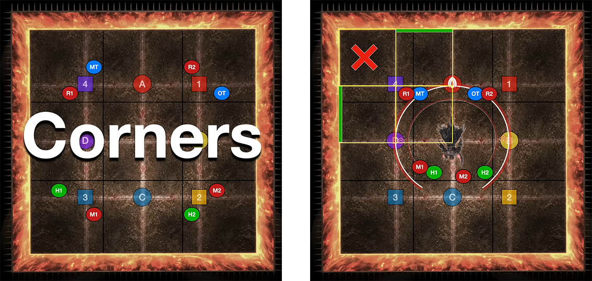 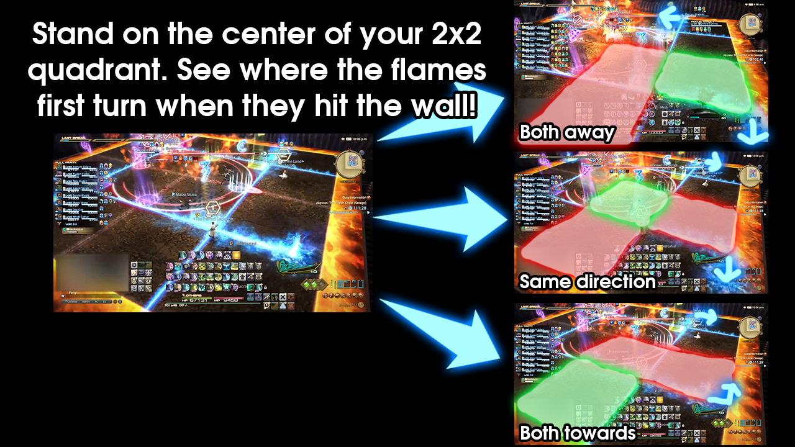This follows up 2 seconds after the previous Volcanic Torches, so you'll need to be fast. Depending on your Volcanic Torches pattern, you may need to run from your safe white square spot to your safe black square spot. The Conceptual Tetraflare / Conceptual Octaflare also resolves at the same time, so be ready to stack or spread while respecting the Sunforge column AOEs. If it's a Conceptual Tetraflare, ranged players should stack on the tanks / melees. The image shown is phoenix + Conceptual Octaflare.
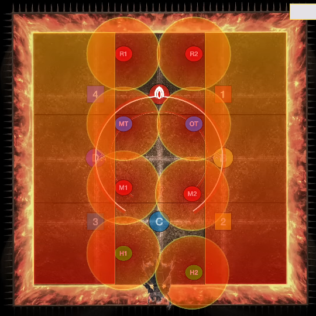Here is a video example of the mechanic from ranged2's POV with Conceptual Tetraflare and the serpent for Sunforge.
The order of whether snake goes first or centaur goes first is random. This guide will assume that centaur goes first. Thus, the timeline for major mechanics is Centaur1 → Manifold Flames → Snake1 → Fourfold Flames → Centaur2 → Snake2 → Enrage.
This is 4 sets of 2 AOEs each. Each AOE inflicts a vuln. Spread out to your clock spots to ensure you don't get clip other people. Remember which AOE you got (1st, 2nd, 3rd, or 4th), as that will be the same order you bait AOEs in a moment.
Hephaistos will do four sets of jumps, each one being a 2-person stack with a big AOE. The players who got the 1st AOE should position NE. The players who got hit 2nd should be center. The 3rd and 4th pair should be on the safe spot East, but ready to move as soon as their other pairs get hit. After the 1st AOE pair gets stomped, the 3rd pair should swap with them. Similarly, after the 2nd AOE pair gets stomped, the 4th AOE pair should swap with them. Refer to the image below (there won't be dots over your head, that's just for guide stuffs).
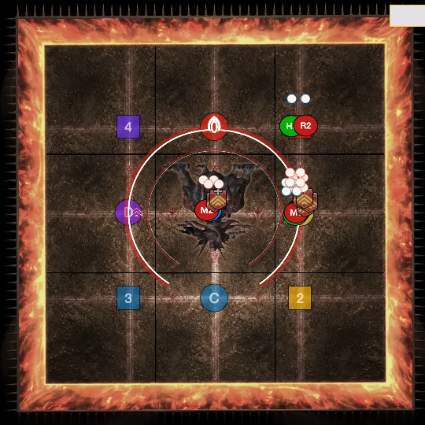Hephaistos will spawn 4 clones of himself, 1 on each cardinal. 2 clones (always adjacent to each other) will create a phoenix and a serpent. The party should position themselves in the row or column directly in front of the phoenix (but not the center square), as these will be the safe spots. In the image below, notice how we line up based on our intercard partners (with melees close and ranged far).
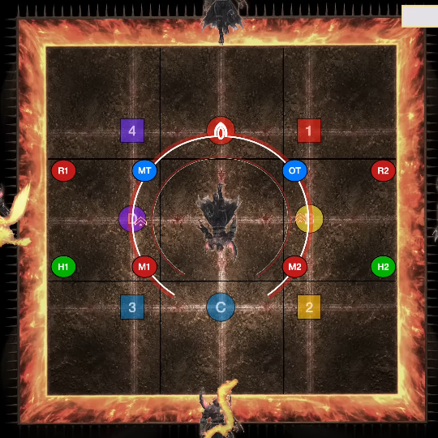Either all 4 supports or all 4 DPS will be hit by an AOE that inflicts vuln. The people that weren't hit should go inside Hephaistos's hitbox on the intercards to bait a proximity line AOE (the intercard you take is the same as your regular intercard, so M1 or H1 would take SW). If you were hit by the vuln AOE, be on any cardinal to avoid the baiters' line AOEs.
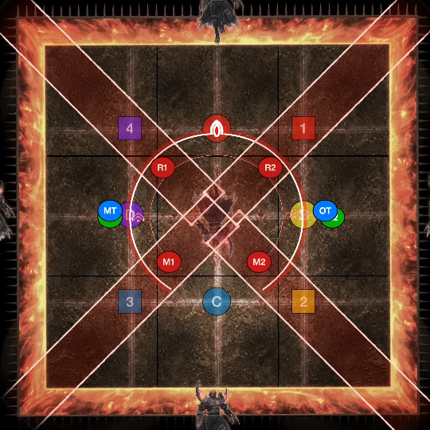2 adjacent Hephaistos clones will create the same animal (either double phoenix or double serpent). If it's double phoenix, the center square is safe. If it's double serpent, your intercard corner is safe. If it's Tetraflare, stack on your intercard (either in the central square or on your intercard corner). If it's Nest of Flamevipers, everyone will get a line AOE. If it's a double phoenix + Nest of Flamevipers, then spread out in your clock spots in the central sqaure. If it's double serpent + Nest of Flamevipers, spread out in your intercard corner and be away from your support / DPS partner. The line AOEs come from Hephaistos, so you should put some "left / right" distance between you and your partner. If you're lined up forward / back, then you'll be eating both line AOEs!
Only 1 of the 4 far corners will be safe. The strategy is to look at the SW corner and see where the flames go when they hit the wall (think of the first Volcanic Torches). If they both branch away, SW is safe. If they both branch towards, NE is safe. If they both go clockwise, then SE is safe. If they both go counterclockwise, then NW is safe.
For this mechanic, you only need to pay attention to yourself and the ranged / melee player in your light party. That is, melee1 and ranged1 should focus target each other, and tank1 and healer1 should do the same. Tanks and melees may flex for certain mechanics.
Look at the debuff list below. The 1 dot or 2 dot just tells you if you'll be resolving the first set of snakes or the second set. The red conal debuff means that you'll do a conal petrification when the timer expires. The green snake debuff will drop a big AOE on you. In Savage, you can't damage the snakes. You need to petrify them with the conal debuff, then melt them with the snake debuff after they've been petrified. Remember to move close to the snake you're going to gaze at, as gazing from the center of the arena could clip other people. Of course, people with the AOE debuff should also stand close to their snake to blow it up (after your conal partner looks at them).
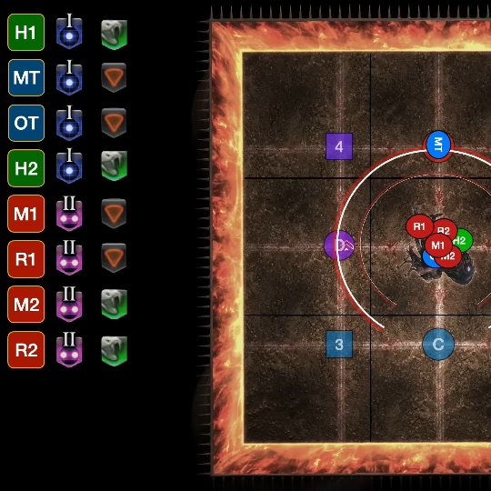Because the 4 snakes will spawn on either all cardinals or all intercardinals, and which cardinal / intercardinal they spawn on is random (e.g., 2 snakes could spawn on North and West at the same time), we need to use the following priority system. Group 1 takes the first snake that spawns NW or counterclockwise of it. Group 2 takes the first snake that spawns N or clockwise of it. So, going off of the image, if the first set of snakes spawned North and West, then the Group 1 supports should take West, and the Group 2 supports should take North. Then shortly after, the Group 1 DPSes takes South, and the Group 2 DPSes takes East.
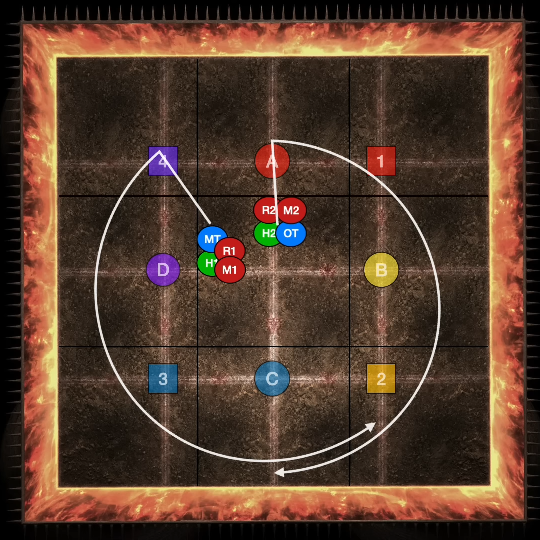Remember that like in Normal, the snakes will petrify when they pop out of the ground. The uptime strat is to stand inside the boss's hitbox and close to the boss's center, then look at the safe spot. If snakes are about to jump out East and West, then stand North or South of the boss and just keep facing the boss. Your attacks will always make you look South or North, and you'll dodge the snake petrification without having to look away. In the below image, the snakes jump out at NW and SE. The party positioned SW of the boss in order to face NE, where there is no snake.
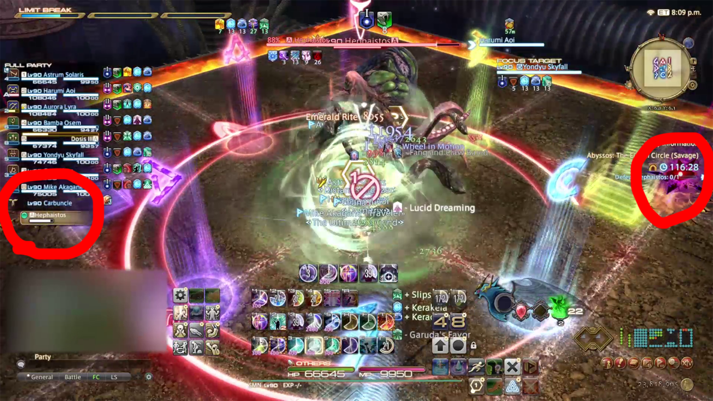One last thing to note: there is a chance that a melee / ranged pair has the same debuff. In the picture below, both M1 and R1 have the conal debuff. That means they'll both end up gazing at the same snake, and the Group 2 DPSes won't have their snake stunned. To work around this, we have tanks and melees flex. So in this scenario, melee1 should go to where Group 2 would resolve, and melee2 should go to where Group 1 would resolve. If the DPS's snakes popped out East and West, then melee1 would go East and melee2 would go West. The same could happen to supports, in which case tank1 and tank2 would swap. Ranged DPS and healers never flex and stick to their group's logic.
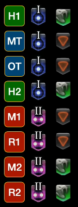One helpful tidbit: if the snakes spawn and rotate clockwise around the field before jumping out, then they (and all snakes for the mechanic) will pop out on cardinals. If they rotate counterclockwise, then they all appear on intercardinals.
This is a lengthy section, but to sum it up: debuffs go out, the first set of snakes spawn and jump out (don't look at them), then the first set of either all supports or all DPS resolve, then the second snakes spawn and jump out, then the second set of either all supports or all DPS resolve.
This will detonate after the upcoming Cthonic Vent.
Proximity AOEs will go out from the corners of the field. Stack up in the center to minimize damage. This attacks spawns 4 vents, 1 at each corner of the arena.
3 sets of 2 vents exploding will happen, just like in Normal mode. Unlike Normal, he will not be tethered to the 2 vents that detonate. You need to see which one has a pillar of fire bubbling from it to find out if it's unsafe. In the 1st and 3rd set of explosions, it doesn't matter which safe spot you stand in. It only matters during the 2nd set because of stacks or spreads going out around the same time.
During the 2nd set of exploding vents, he will also cast a Tetraflare or an Octaflare. If 2 corners are safe, Group 1 takes the West corner and Group 2 takes the East corner. For example, if the safe corners are NW and SE, Group 1 goes NW and Group 2 goes SE. If the safe sides are adjacent, such as NW and NE (all of North), we use boss relative safe spots.
Refer to the images below for the safe spots. If it's safe corners and Octaflare, then facing the center, it's melee DPS close, tanks left, ranged DPS right, healers in the back. If it's Tetraflare, just have the tank stack on the melee DPS and the healer stack on the ranged DPS.
If it's an entire safe side like in the second image, use those static spots for Octaflare. For Tetraflare, have supports stack on DPS in pairs.
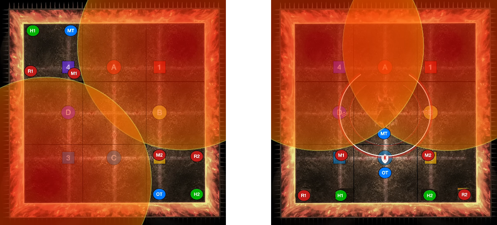After Cthonic Vent, Hephaistos will do a Sunforge. The Conceptual Tetraflare / Conceptual Octaflare from earlier will go off.
The order of Centaur2 first vs Snake2 first is the same order as the Centaur1 / Snake1. Since this guide assumes Centaur1 happens before Snake1, Centaur2 will also happen before Snake2.
Hephaistos will face a random cardinal then cast 1 of these 2 attacks. Quadrupedal Impact is a knockback AOE, so you should go to the wall he's facing to ride the knockback. Quadrupedal Crush is a big AOE. Be in the row of squares on the opposite side of where he's facing. Being max melee on his butt is safe!
After he jumps, Hephaistos will use 1 of these 2 attacks. This goes off as soon as he finishes casting his next attack, Blazing Footfalls, so be ready to resolve it. Conceptual Diflare is a light party stack that is centered on the healers. Group 1 should be closer to the boss and Group 2 should be away from the boss. Conceptual Tetraflare is the set of 4 stack AOEs that you're used to by now. This time, have the pairs be melee / ranged based so people can get uptime. From closest to furthest from the boss, the pairs are: T1/M1, T2/M2, H1/R1, H2/R2. The picture below shows the Conceptual Tetraflare pair stacks.
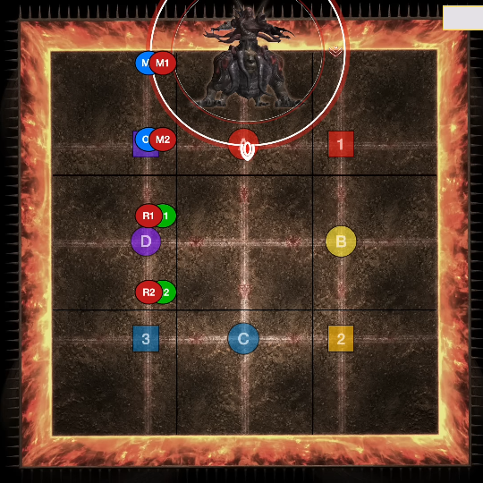This is a long cast (12 seconds!) that telegraphs a series of quick attacks in succession.
First, he'll dash through the center and do a light knockback. Unlike Normal mode, the center black squares are lethal, so you need to stand just barely outside of them.
Second, he does Quadrupedal Impact or Quadrupedal Crush. He always jumps to an adjacent cardinal. So if he started North, he'll do his dash to the South, then do his Quadrupedal Impact / Quadrupedal Crush on either East or West.
Thirdly, he'll dash through the center again, with another light knockback. If we go off of the earlier assumptions, that means he will dash from East to West or West to East. Make sure you're not in those center 3 black squares.
Fourthly and finally, he'll do whichever Quadrupedal Impact / Quadrupedal Crush he did not do for his second attack. Before this resolves, he'll begin a Volcanic Torches attack, which resolves shortly after this Quadrupedal Impact / Quadrupedal Crush goes out. One entire column will be safe, and you will know which column is safe before Quadrupedal Impact / Quadrupedal Crush hits. If it is Quadrupedal Impact, you will need to ensure that you are knocked back towards the safe column, otherwise you'll be thrown knee-deep in Volcanic Torches and burn up shortly after.
When he uses Quadrupedal Impact, you'll need to rush to the center of the wall that he will use this on and angle yourself slightly left or right towards a safe spot. If Quadrupedal Impact went first, you'd need to angle yourself the right way to avoid the Quadrupedal Crush that happens soon after. If Quadrupedal Impact went second, then you'd need to ride it away from the Volcanic Torches. So no matter what, always be mindful of where Quadrupedal Impact will move you!
Below is an image of how to ride the Quadrupedal Impact to the safe column if it's the last attack which precedes Volcanic Torches. Notice how the party is slightly offset from the center of the wall, but not by too much.
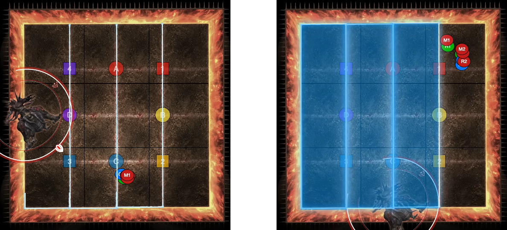Here is a video example of the mechanic with Conceptual Tetraflare, Quadrupedal Impact, then Quadrupedal Crush.
This mechanic looks daunting, but it's actually really simple. You only have to stand in 2 spots throughout the entire mechanic. First let's look at the debuffs. Everyone has a conal gaze and a snake AOE this time, but only a few players have a 3rd debuff, which is role-based. We'll get back to that later.
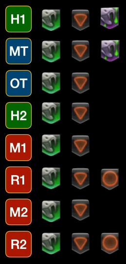Everyone is going to stand in static spots based on the 2nd image. You safe spot is the center 2x2 white squares (just like in Normal mode), and each player should be near the center of a square. There is a Lahabrea mask at the midpoint, and you can stand near it slightly offset towards the center. Just like Snake1, the snakes will either rotate clockwise and spawn on the cardinals, or they'll rotate counterclockwise and spawn on intercardinals. Either look directly at an intercardinal or a cardinal to avoid looking at them. Everyone will look at their nearest snake for their conal debuff. For the Reaper in the image, they'll either look at the West snake if the snakes spawned on cardinals, or they'll look at the SW snake if the snakes spawned on intercardinals. Similarly, the Warrior will either look at the North snake or the NE snake.
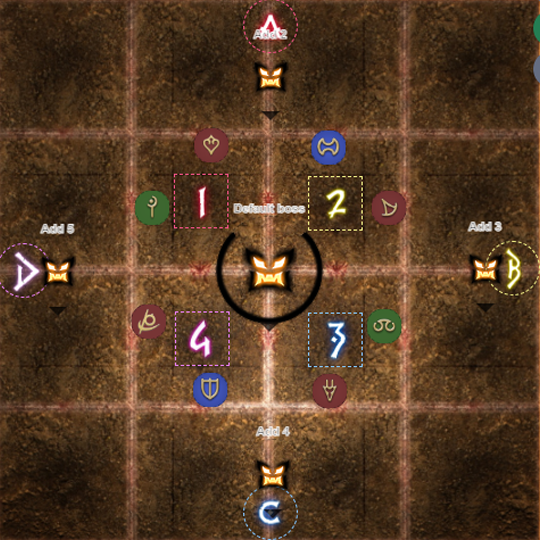After both debuffs expire, you'll need to handle the 3rd debuff. 2 supports will have the same 3rd debuff and 2 DPS will have another same debuff. After both debuffs expire, he will cast Illusory Creation and a Hephaistos clone will spawn. He will fire a laser directly in front of him and kill 2 snakes in his way. This leaves you with 2 remaining snakes that you will have to hide around. The orange circle debuff is a omnidirectional gaze attack, which will petrify everyone who's not hiding behind a snake. The purple snake debuff is a stack AOE. Use Snake1 logic to find out which snake Group 1 and Group 2 should go to. In this image, the Hephaistos clone spawned North and will kill the North and South snakes. This means Group 1 should go West and Group 2 should go East. The person with the omnidirectional should stand outside and the rest of the party should stand on the inside as pictured below.
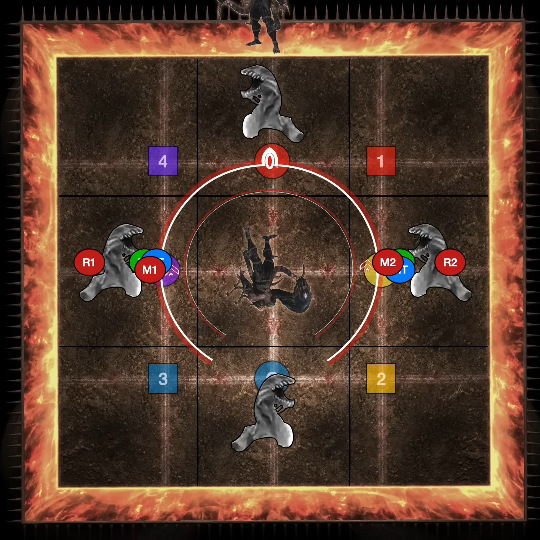Just like with Snake1, people in the same light party may have the same 3rd debuff. If this happens, you have to do a tank flex / melee flex as necessary. You should also consider "no debuff" as a debuff. For example, if M1 and R1 have no 3rd debuff, you can deduce that both M2 and R2 have the 3rd debuff. This means melees should swap groups. You only do tank / melee swaps for the 3rd debuff (an omnidirectional gaze attack or a stack AOE), since everyone will have the first 2 debuffs (a conal gaze and a snake AOE). The first 2 debuffs with the conal and the green snake AOE will always be resolved in your static positions seen in image 2.
In short, Snake2 is: stand in your static spot, figure out if snakes will pop out on cardinals or intercardinals and look directly at an intercardinal or cardinal accordingly to avoid looking at them, and after they pop out look straight at the closest snake. After 2 debuffs expire, find where the Hephaistos clone is; the snakes in front of it will die. Find the snakes that won't die and use Snake1 logic (Group 1 CCW, Group 2 CW) to find which snake to hide behind. Tanks and melees swap as necessary.
Here is a video example of the mechanic from melee1's POV, cardinal snake spawns, the Hephaistos clone spawning north and cleaving the north and south snakes, and the omnidirectional gaze debuff.
After this, Hephaistos will do one raidwide and then enrage. If you push him below 50%, you'll be graced with his second phase.